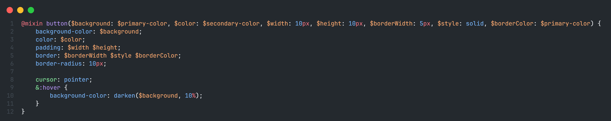
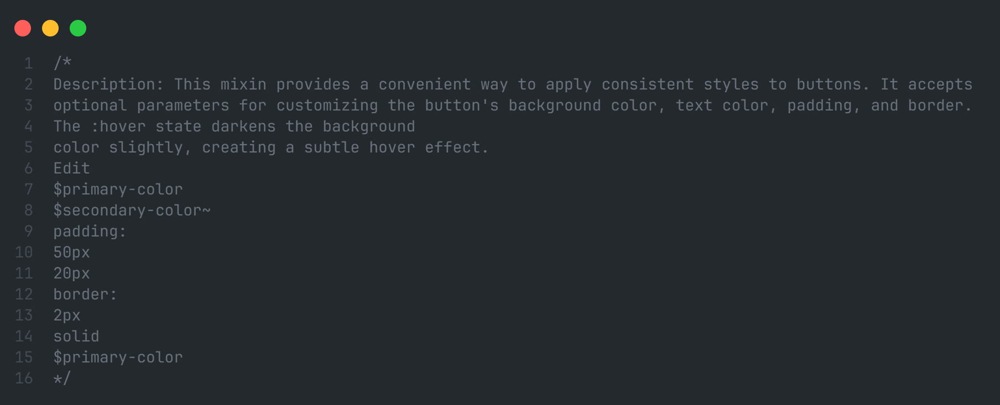

This extension offers a Sass code snippet package that includes a collection of useful mixins to expedite CSS development. The mixins cover various functionalities, ranging from Flexbox and CSS Grid to transitions and consistent styling for buttons, among others.
The mixins offer an efficient way to implement key features in CSS, speeding up the development process and enhancing design consistency. The ease of customization for each mixin allows for quick adaptation of styles to the specific needs of each project.
You can use the "Tab" key in the comments section to quickly input the default values for the parameters and streamline the development process in the components.